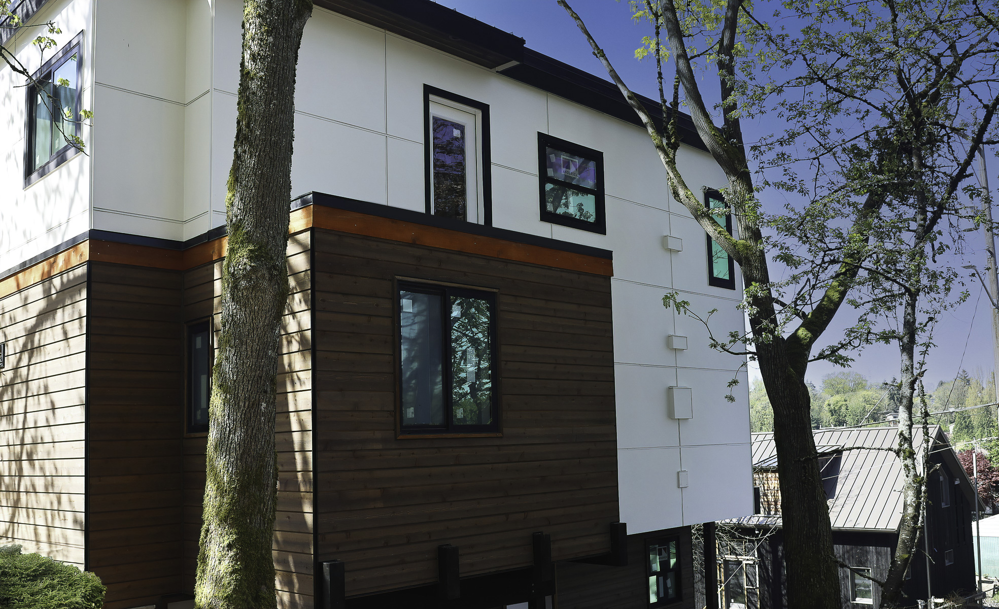
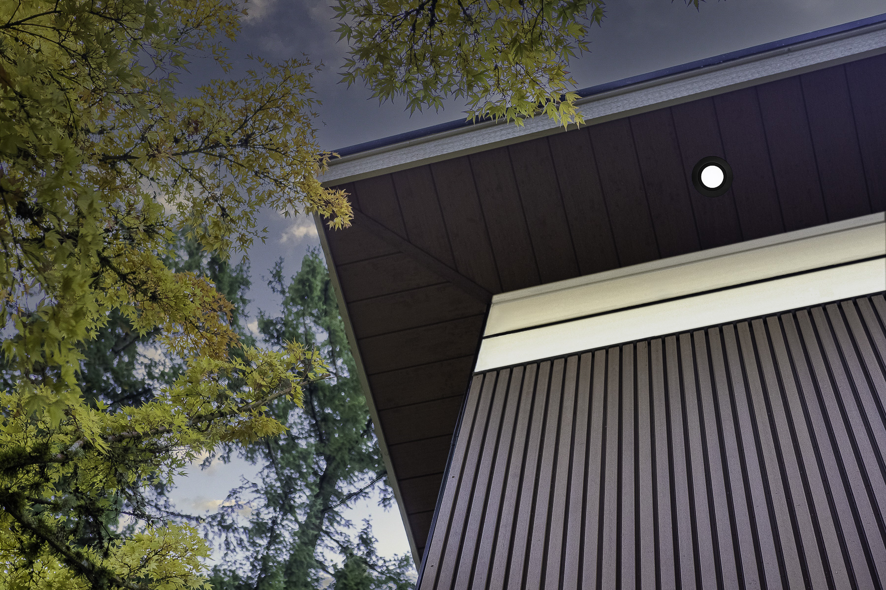
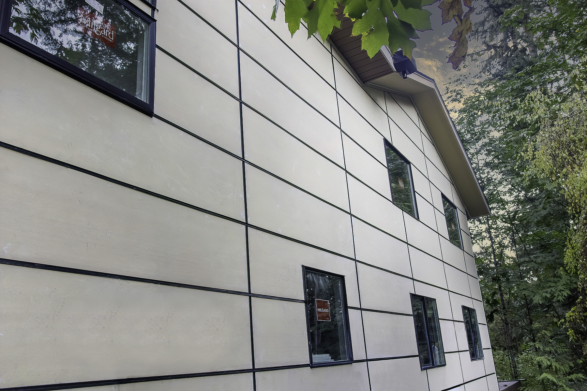
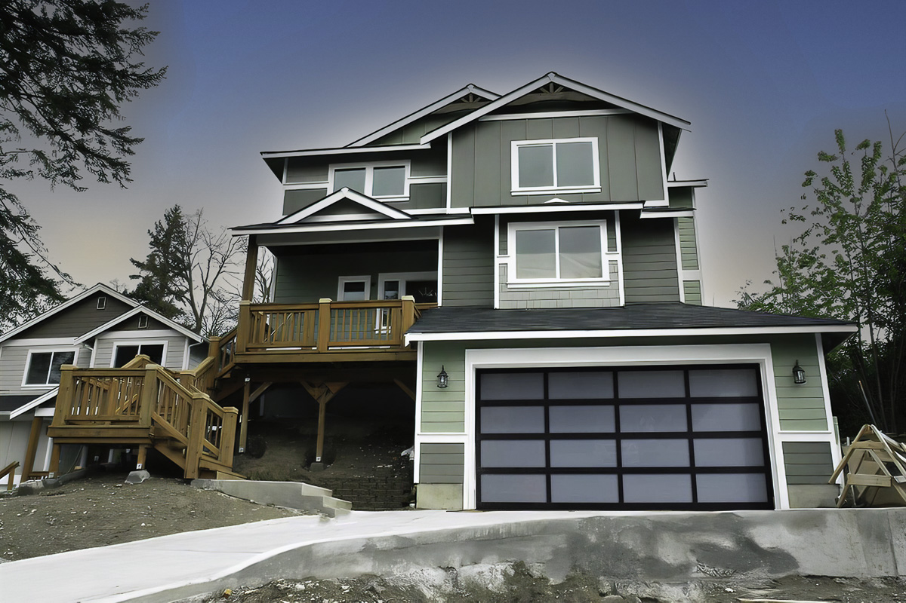
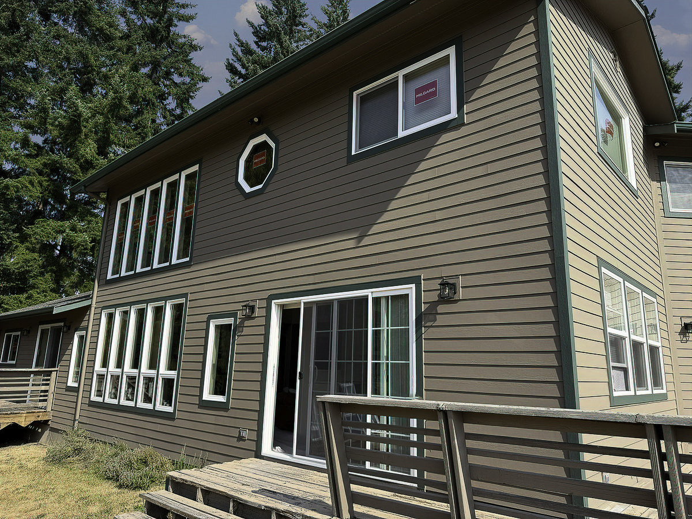
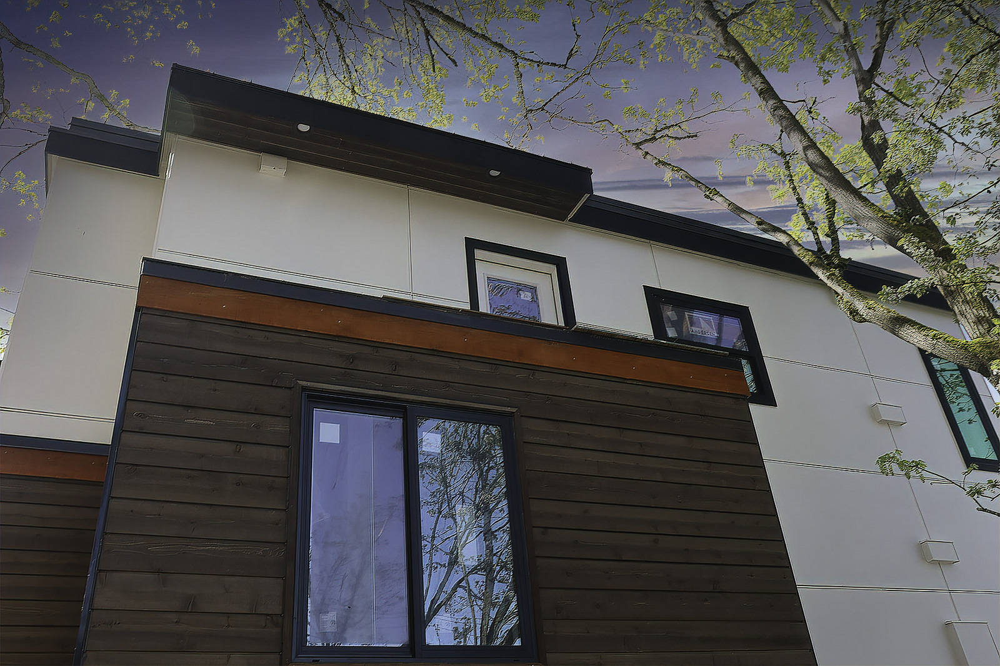
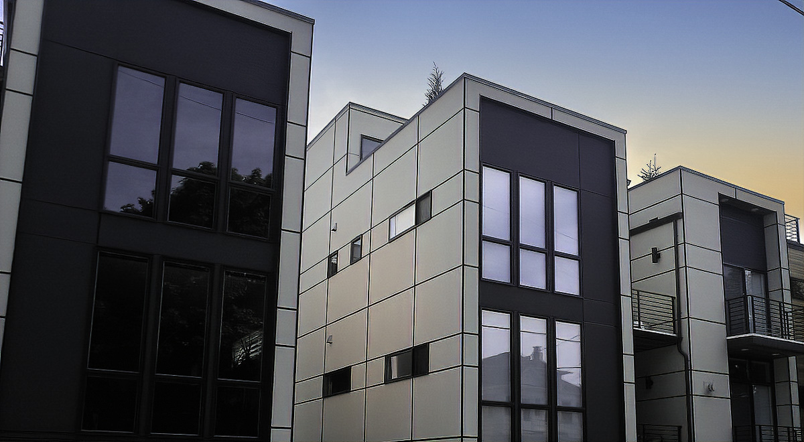
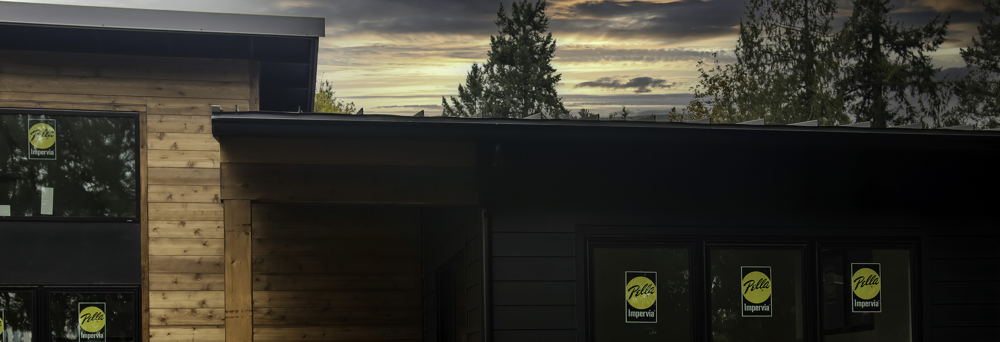

Seattle-Tacoma siding replacement
Siding built for wet Northwest homes.
Breeze Siding helps homeowners replace failing siding, plan James Hardie and fiber cement exteriors, and fix the trim, flashing, and repair details that protect the wall behind the siding.
Seattle sidingReplacement, repair, and wet-weather details
Tacoma sidingLocal siding replacement in the South Sound
Hardie costsWhat changes the square-foot price
Free estimateStart with a practical first conversation
- 15+
- years experience
- 500+
- completed projects
- 5.0
- Google rating
Free estimate
Start with a smarter exterior estimate.
Tell us what is happening with the home. We will help you sort out the siding, repair, material, and timing details that belong in the first conversation.
Featured exterior direction
A siding project should solve more than the surface.
The best exterior projects combine durable materials, moisture-aware details, and a clean finish. That can mean new siding, trim repair, window integration, flashing upgrades, or a more complete plan for the home envelope.

Breeze Siding LLC
A cleaner exterior, a stronger wall system, and a smoother project.
Your siding has to handle wet winters, sun breaks, wind, and daily curb appeal. We help homeowners compare fiber cement, James Hardie, cedar, engineered wood, and other exterior products, then install them with clear expectations from estimate to final walkthrough.
- Siding replacement, James Hardie installation, cedar, engineered wood, and Hardie panel accents
- Window, trim, paint, and deck work coordinated with siding projects
- City-specific guidance for Seattle siding replacement and Tacoma siding projects
Exterior Services
Start with siding, then solve the details around it.

Siding Replacement & Installation
Replace worn, damaged, or outdated siding with fiber cement, cedar, engineered wood, and exterior systems suited to Northwest homes.
View siding services Seattle siding replacementJames Hardie & Fiber Cement
Plan a durable exterior with Hardie siding, panel accents, trim details, and installation choices that fit wet Puget Sound weather.
View Hardie installer Compare Hardie costs
Exterior Painting
Weather-resistant exterior paint and trim detail that help protect your investment and sharpen curb appeal.
View painting services
Decks
Deck construction and exterior upgrades that make outdoor areas more usable, durable, and inviting.
View deck services
Repairs
Targeted exterior repairs for siding damage, soft trim, flashing gaps, and leak-prone areas before they grow.
Dry rot warning signsNot sure what your exterior needs?
Send a few details about the home and we will help you decide what belongs in the estimate.
Start with a free estimateProject Gallery
Real work from homes around the Puget Sound.



Reviews
Local homeowners choose Breeze Siding for clear communication and quality exterior work.
★★★★★
"Professional, communicative, and the finished siding looks excellent."
Google review★★★★★
"The crew kept the project moving and cleaned up well at the end."
Google review★★★★★
"Helpful estimate process and solid recommendations for the exterior."
Google reviewHow it works
Simple steps, clear expectations.
- Tell us about the project. Share your address, timeline, and what you want changed.
- Walk the exterior together. We inspect the siding, trim, windows, and trouble spots.
- Review options and estimate. You get a practical scope with product recommendations.
- Build with care. Our crew completes the work and cleans up the site.
Service Area
Serving homeowners from Seattle to Tacoma.
Based in the South Sound, Breeze Siding works across King County, Pierce County, and nearby Puget Sound communities. For city-specific siding replacement, start with our Seattle siding replacement contractor page or the Tacoma service page below.
FAQ
Questions homeowners usually ask before an exterior estimate.
What areas do you serve?
Breeze Siding serves homeowners looking for siding replacement in Seattle, Tacoma, Bellevue, Puyallup, Spanaway, and nearby Puget Sound communities.
Do you offer free estimates?
Yes. Send your project details or call directly, and we will follow up to understand the home, scope, and timeline.
What siding products do you install?
We work with durable exterior products suited to Northwest weather, including James Hardie and other siding options depending on the project.
Can you help with windows, paint, and decks too?
Yes. Breeze Siding handles siding, windows, exterior painting, decks, and related exterior repair work.